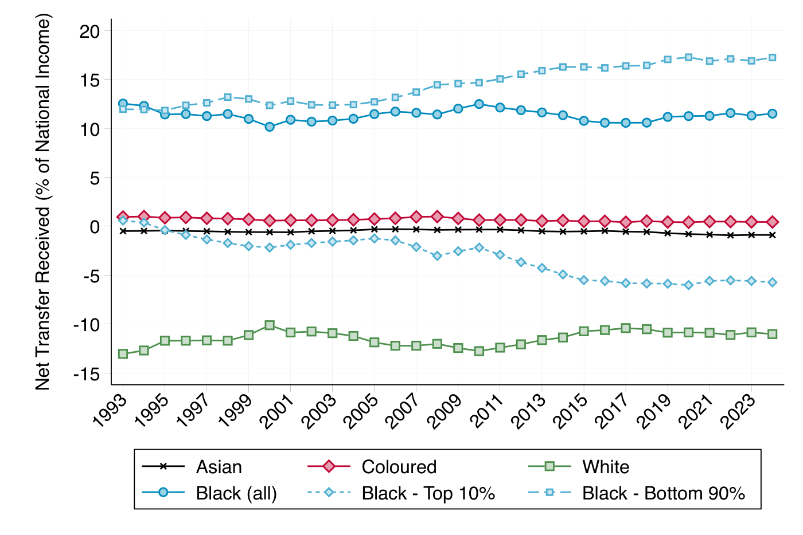
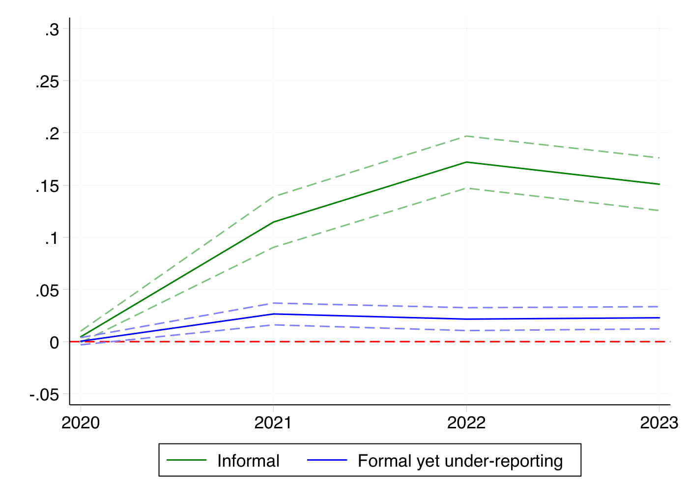
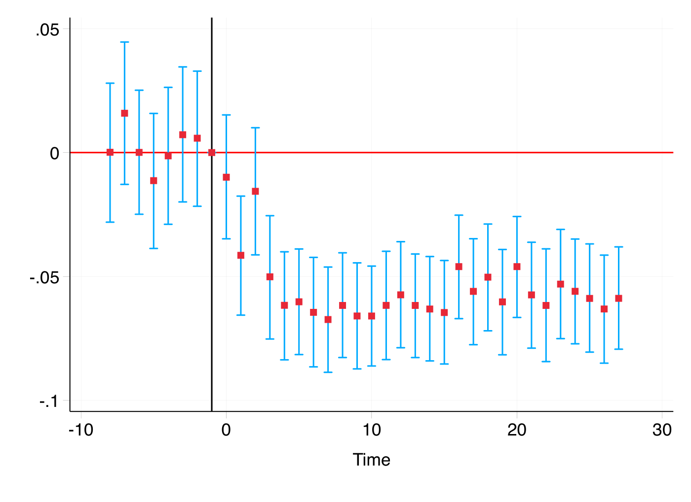
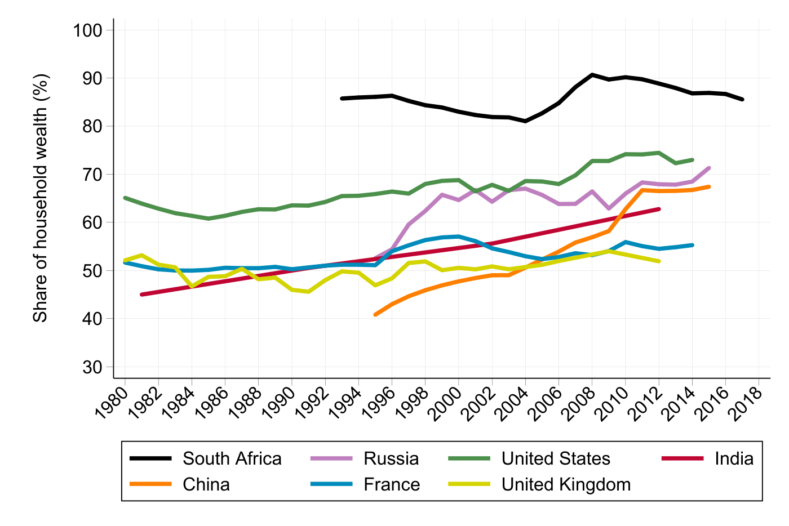

Research
Working Papers
Racial Inequality and Redistribution in Post-Apartheid South Africa
with Amory Gethin
Revise and Resubmit, Journal of the European Economic Association
Press: The Economist
Abstract & figure

Abstract
We study post-Apartheid inequality dynamics in South Africa using a new microdatabase that combines survey, tax, national accounts, and budget data from 1993 to 2019. Until 2005, pretax inequality rose, racial disparities widened, and redistribution stagnated. Thereafter, pretax inequality fell back toward its 1993 level, while major expansions in tax-and-transfer progressivity sharply reduced posttax inequality. Rapid growth of top Black incomes contributed to halving the White-to-Black pretax income ratio and shifted 20% of taxes from Whites to top Black earners. Despite reaching its lowest point in history in 2019, the racial gap remains extreme by international standards, even after redistribution.
Fraud Detection Under Limited State Capacity: Experimental Evidence From Senegal
with Bassirou Sarr and Mattea Stein
Abstract & figure

Abstract
Tax administrations in low-income countries face widespread tax evasion and high enforcement costs. They thus need information to detect where tax evasion is most severe, and allocate scarce resources accordingly. This paper shows that leveraging large firms’ trading network to collect information about their suppliers is a cost-efficient way to detect tax evasion and increase future audit returns. We collaborate with the Senegalese tax administration on a vast data collection effort to digitise lists of payments submitted by the largest firms and show that the vast majority of firms, at least 89%, provide incomplete information about their suppliers. This prevents any cross-checking against income declared by the suppliers themselves to detect revenue underreporting. We then randomise a low-cost communication campaign across all 3,487 incomplete reporters, to discourage future misreporting. The intervention increases the reporting of suppliers’ identification information by 52%. In aggregate, this allows us to uncover $145.5 million in unreported revenue (i.e. 0.5% of GDP). Most of it accrues to a few tax-registered suppliers, as opposed to informal ones. A simulation exercise shows that exploiting the newly available information to target the largest under-reporting suppliers would increase audit returns by at least 100%.
Does Electronic Filing and Payment Increase Tax Compliance? Evidence from Large Taxpayers in Senegal
with Awa Diouf and Fabrizio Santoro
Abstract & figure

Abstract
Governments in low-income countries have progressively introduced electronic tax filing and payment systems in the hope of reducing enforcement costs for tax administrations, compliance costs for taxpayers, and the risk of collusive in-person interactions between the two. Combining high-frequency administrative data with a dynamic difference-in-differences approach, we investigate the causal impact of a reform that made the use of these technologies mandatory for large taxpayers in Senegal. Our findings indicate no—or only limited—effects on key measures of tax compliance, such as the probability of declaring, the probability of paying, or tax payments. However, e-filing reduces the prevalence of missing values by more than 90 per cent, with notable measurement implications. In particular, we show that aggregate formal employment is at least 20 per cent greater than suggested by digitised paper-based records.
Income Inequality in Côte d’Ivoire: 1985–2014
Abstract
Abstract
Due to under-reporting and non-response, surveys often fail to accurately measure the income of the wealthiest. Little is known about the size of such biases, especially in low income countries, as it requires to have access to more reliable sources of information. In this paper we confront the 2014-2015 household survey with first-hand income tax files in the case of Côte d’Ivoire, 2014. We first identify, within the survey, a sub-sample corresponding to the one for which we have fiscal data. Comparing the earning distribution of this sub-sample with the one extrapolated from the fiscal data, we are able to measure the magnitude and the distribution of the bias among top earners in the survey. We then use this estimation to adjust the pre-tax and pre-transfer income distribution of the entire survey sample and thus recover corrected nationally representative inequality statistics. Our results show that the 2014-2015 survey significantly underestimates income inequalities. After our correction, the top 1% share increases from 11.57% to 17.15%, the top 10% share from 40.34% to 48.28%, and the Gini coefficient from 0.53 to 0.59. We compare our estimates with more commonly used consumption inequality measures and discuss the potential sources of differences. Making the assumption that the bias is constant over time for a given level of income, we also extend our correction to previous surveys. After correction, top 1% shares increase by 5-6 percentage points, top 10% shares by 7-8 percentage points and Gini coefficients increase by 6 points, making Côte d’Ivoire’s inequality levels comparable to that of the US.
Publications
Wealth Inequality in South Africa, 1993–2017
with Aroop Chatterjee and Amory Gethin
The World Bank Economic Review, 36(1), 19–36, 2022.
Journal page / Working paper version
Abstract & figure

Abstract
This article estimates the distribution of personal wealth in South Africa by combining microdata covering the universe of income tax returns, household surveys, and macroeconomic balance sheet statistics. South Africa is characterized by unparalleled levels of wealth concentration. The top 10 percent own 86 percent of aggregate wealth and the top 0.1 percent close to one-third. The top 0.01 percent of the distribution (3,500 individuals) concentrate 15 percent of household net worth, more than the bottom 90 percent as a whole. Such levels of inequality can be accounted for in all forms of assets at the top end, including housing, pension funds, and financial assets. There has been no sign of decreasing inequality since the end of apartheid.
The Triumphant Elephant’s Return? Growth and Income Inequality in Côte d’Ivoire (1988–2015)
with Denis Cogneau and Kenneth Houngbedji
Afrique contemporaine, 263–264(3–4), 221–225, 2017.
Abstract
Abstract
Though Côte d’Ivoire has experienced renewed growth since 2011 and has ambitious plans for development in place, household surveys on standards of living covering the last three decades reveal both a significant improvement in average income and a persistence of inequality. Poverty is therefore higher than in the late 1980s. In addition, access to original income tax data makes it possible to capture the top wages paid in the private sector. Formal jobs in the private and public sectors continue to shield wage earners from poverty and remain over-represented among top incomes. However, the persistent rationing of this type of job has made informal sector the main type of employment among the urban wealthy class and the poor alike.
Selected Work in Progress
Using Third-Party Data to Improve Tax Compliance in a Context of Low Enforcement
with Florence Kondylis, Bassirou Sarr and Mattea Stein. RCT in the field.
Market Concentration, Rent Extraction and Minimum Wage in Senegal
with Bassirou Sarr. PEDL project / Note
Taxing High Income Earners in a Low Income Country
with Pierre Bachas and Justine Knebelmann. Note
Income Inequality in Senegal
with Denis Cogneau, Bassirou Sarr and Anne-Sophie Robilliard
Policy Reports
Strengthening Personal Income Taxation in Senegal – Case Study
with Pierre Bachas, Aïssatou Diallo, Justine Knebelmann and Anaëlle Touré
Equitable Growth, Finance and Institutions Notes, Washington, D.C.: World Bank Group, 2023.
Data Management at the Senegalese Tax Authority: Insights from a Long-term Research Collaboration
with Florence Kondylis, Bassirou Sarr and Mattea Stein
African Tax Administration Paper 27, Brighton: Institute of Development Studies, 2022.
with Aroop Chatterjee and Amory Gethin
World Inequality Lab Working Paper 2021/02, 2021.
Simulator code / Press: VoxEU, Bloomberg, News24, Free Market Foundation
with Akim Al-Mouksit, Mahdi Ben Jelloul and Anne-Sophie Robilliard
AFD Research Papers 190, Paris: Agence française de développement, 2020.